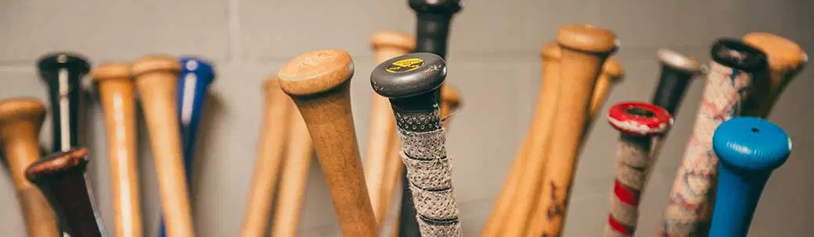

Evolution of Baseball Bats
A history of how baseball bats grew over the years.
4/3/25 by Zane Jasmin
Throughout history we have always found new ways to smash things with sticks. It is a specialty from the days we would hit cave bears over the head. One could say that a man holding a club high, ready to swing, is the essence of what it means to be human.
Baseball bats have come a long way. The earlier designs of baseball bats used to be from a piece of wood and had a thick shape. Different materials like maple, ash, and aluminium, are all used to make baseball bats, each with its different aspects.
Prehistoric Baseball: Stickball
Stickball is one of the earliest forms of baseball. It is usually played as a pick-up game in large cities in the Northeastern United States like New York City, Philadelphia, and Boston. The equipment consists of a broom handle and a rubber ball. It dates back to at least the 1750s and was widely popular with younger people during the 20th century until the 1980s. It's a good guess that it could’ve come into play with baseball and why so many people love to play.
Early History of Baseball Bats
The earliest of bats go back to the 19th century when players used wooden bats that were hand-carved. They were heavier and less durable than the ones we have today. They used to have unique shapes for the early bats such as the banana bat or the mushroom bat. They didn’t have many bat rules for the pros until later on.
Sports Equipment Standards
There are many rules for the sport now, especially the bat in the MLB. MLB rules say that bats now “must be a smooth, round stick not more than 2.61 inches in diameter at the thickest part and not more than 42 inches in length. The bat shall be one piece of solid wood.” They are very strict about this and you will be suspended for multiple games if you break this rule.
Famous Equipment Cheats
- Deflategate: In 2015, there was a big accusation that the NFL quarterback, Tom Brady asked the team equipment staffers to underinflate footballs in the AFC championship game against the Indianapolis Colts, Brady was then suspended for four games and the NFL had a huge investigation about it.
- Baseball Pine Tar: Major league baseball player Michael Pineda was suspended for using pine tar to have better grip for the baseball because it was cold. He smeared it on the right side of his neck so people thought it was sweat.
Cheating with Bats: Corking
A corked bat is a modified bat that has been filled with cork or other less dense substances to make the bat lighter. A lighter bat gives the hitter a faster swing, in Major League Baseball, modifying a bat with foreign substances is illegal and can lead to suspension.
Timeline of Bats
| Date | Bat Photo | Event | Name of Bat |
|---|---|---|---|
| June 17, 1890 |

|
First designs of the baseball bat were introduced. | They called it the “Banana Bat”. |
| 1906 |

|
Bats started to improve and have different shapes. | This was called the “mushroom bat”. |
| 1908 |

|
different handle was added on for different grip with more improvement and allowed players to choke up more. | It was called “The Wright & Ditson Lajoie bat”. |
| 1930s-today |

|
Maple bats were being put out and had normal handles. | Bats like the Louisville Slugger. |
| 1970s-today |

|
Metal alloy and aluminium bats were introduced in college baseball and gained lots of popularity in youth baseball today. | There are lots of well known metal bats like the Marucci Cat X or the Easton Hype bat. |
| 2025 |

|
On the opening day for the 2025 MLB season, the New York Yankees were spotted with a new bat that is legal and has the barrel lower which can also be included in the evolution. | It is a torpedo bat designed to hit harder with a lower barrel and it could gain a lot of popularity in the future. |

The image above shows the types of bats we have today and how much they are different from the early times of baseball.
In conclusion, baseball has been around for a long time and the bats have been there since the beginning. They are all so unique with different designs and sizes and will keep on evolving over the years ahead. In the end, they’re all just made to hit a ball!
Sources:
- https://en.wikipedia.org/wiki/Corked_bat
- https://batclubusa.com/blogs/news/the-evolution-of-baseball-bats-a-historical-overview
- https://en.wikipedia.org/wiki/Stickball
- https://www.baseballprospectus.com/news/article/77155/mlb-official-baseball-rules-annoted-equipment-and-uniforms-part-3/
- https://www.usatoday.com/story/sports/2023/12/12/cheating-scandals-that-rocked-sports/70570326007/
- https://www.mlb.com/news/yankees-right-hander-michael-pineda-ejected-for-having-pine-tar-on-neck/c-73145346
- https://en.wikipedia.org/wiki/Baseball_bat